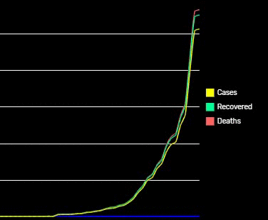
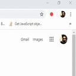

Summary Tab, defaults to the total number of confirmed cases, recovered, and deaths. It can also be accessed by clicking on, globe icon.
If you want to view a quick summary of cases (total cases, recovered, and deaths) for a county, you can choose a country from the drop-down menu.
Detailed Tab, presents you detailed information about the cases
New - New cases reported (confirmed, or deaths)
Active - Currently active cases (confirmed cases)
Critical - Critical cases under observation
Total - Total cases
Time Series Tab, allows you to visualize data with line charts for confirmed cases, recovered, and deaths registered. Each is represented with a different colour.
Choose a country from the drop-down menu to load the chart for a country.
Sometimes lines for, confirmed cases, recovered, and deaths could overlap. You can click on - confirmed, recovered, or deaths, in the legend to hide or show them.

All Countries Tab, shows you a summary of confirmed cases, recovered, and deaths for all affected countries, and sorts them in descending order.
Search bar, allows you to search for a particular country
You can set this to let COVID-19 Reporter notify you when it has looked for new data from the source.
Setting this option would let, COVID-19 Reporter, remember the tab you were on last time and loads information for the country you chose.
COVID-19 Reporter, looks for updates every 2 hours. You can change the frequency by choosing the time interval from the drop-down.
Clicking on, Default button allows you to reset the options to default.